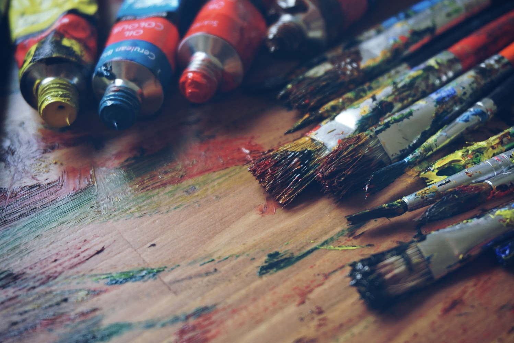

Né à Limoges un 16 janvier, c’est Paris en 1990 qui m’inspire et m’invite à prendre brosses et fusains. Les cours du soir des Beaux-arts rue de Pontoise dans le V eme arrondissement s’avère être un terrain fertile à la ballade intellectuelle et romantique. Les nus sont une des écoles les plus formatrices à la peinture intuitive et instantanée. Elles suscitent les envies, les formes voluptueuses et le mouvement, le nu immobilisé inerte et vivant en même temps. « En mouvement » est la plus belle des récompenses.. Sentir et exprimer… S’exprimer à travers le corps inerte et vivant à la fois, les chairs roses et vertes, les rouges vermillons, les bruns et les terres de sienne brulées en touches affirmées se promènent sur le papier et le modèle apparait. Puis à Bordeaux en 1998 avec plus d’espace dans l’Atelier de la plasticienne Domenic Lobera “Fenêtre sur cour” entouré d’herbe folle ou les esprits vagabondent ci et là autour de la pierre blonde, de l’argile et du siporex. Des moments qui me font découvrir les techniques de la sculpture, les mains dans la matière qui façonnent doucement, tournent, entourent, coupent et accompagnent. En passant par La Creuse, le petit village d’Azat est le lieu de ma première exposition, Argiles, sculptures et peintures sont installés dans une grange, un premier « regard » des visiteurs qui rassurent... La peinture ne me quitte plus, avec pourtant une production minimale, mon attirance pour le rond dans une envie carrée prend le dessus. Cézanne, Matisse et Picasso deviennent les fils d’araignée qui me retiennent, m’aspirent puis m’inspirent. Des carnets de voyage à l’huile puis à l’acrylique, du sud de la France à New York, les verticales croisent souvent les horizontales.


Venez découvrir ma galerie. De l'huile à l'acrylique, du pinceau au couteau, inspirés de mes voyages, de Marrakech à New-York en passant par Amsterdam, le cubisme reste mon fil conducteur...
Voir la galerie>
... Ou découvrez le travail de la pierre tendre et de l'argile à travers des réalisations éclectiques : tendances ethniques de l'Amérique du Sud à l'Afrique.
Voir la galerie >


Contactez-moi !